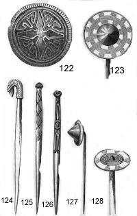
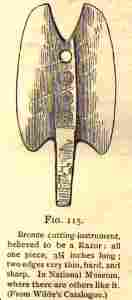
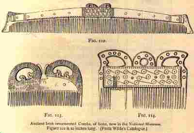
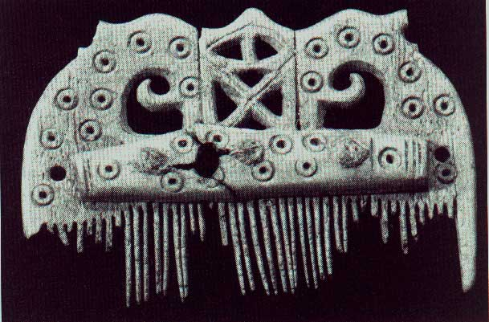

Hair, Jewelry, etc.
- Home
- Hallstat and La Téne Celts
- Ireland, 5th - 10th c. AD
-- Hair, Jewelry, etc. (Classical Celts and pre-medieval Ireland) - Late Medieval Ireland
- Medieval Scotland, 1100-1600
- Scotland, 1600-1800
-- Assembling a Basic 18th c. Woman's Outfit - Dyes
- Fiber Working Techniques
- Celtic Costume Myths and Tips
- Patterns and Resources
- Bibliography
- Recommended Reading
- Other links
Bathing -- The Celts bathed, and did so frequently -- every day, in fact (Joyce, Vol. 2, p. 185). In fact, the they used soap, and introduced it to the Romans, who previously used sand and strigils (sticks) to clean themselves. They also washed their clothes on a regular basis -- in laws regulating fosterage, it is decreed that a foster child must have two brats, which are to be washed every other day. Hair was combed daily after a bath (Joyce, Vol. 2, p. 178).
Soap -- Some sources state that the Celts invented soap; however, I haven't been able to trace a source for this information, and have also read that soap was invented in Babylon. It's entirely possible that soap was discovered independently in several places. If anyone has documentation for this information, please let me know.
The Old Irish word for soap is 'sle/ic'. People washed their hands with soap in the morning, and bathed with soap in the evening, also applying oil and scented herbs after the bath.
Fingernails -- Among the higher classes in Ireland, the fingernails were kept well-groomed; one warrior is spoken of disapprovingly in a text as having 'ragged nails,' which was considered shameful. Women sometimes dyed their nails crimson. When Deirdre laments the deaths of the sons of Uisnech, she says: "I shall sleep no more, and I shall not crimson my nails: no joy shall ever again come upon my mind." (Joyce, Vol. 2, p. 176)
Makeup -- Ladies sometimes dyed their eyebrows black with berry juice (I don't know what kind of berry was used): "A bowl she has whence berry-juice flows, with which she colours her eyebrows black." Irish missionary monks were also known to paint or dye their eyelids black. The cheeks were also reddened using a plant called 'ruam' -- probably the sprigs and berries of the alder tree. It is not clear whether only women reddened their cheeks, or men as well. (Joyce, Vol. 2, p. 177)
Hair -- Hair seems to have been usually worn long by the free classes, based on descriptions by Classical and early Irish sources and depictions in Irish artwork. Notable exceptions are the Roman sculpture of the 'dying Gaul', and the soldier from the Book of Kells, who has hair that looks like a "bowl" cut tilted forward -- long over his eyes and short in the back his head. This style looks very much like the 'glib' style worn by soldiers in late medieval Ireland, as can be seen in a picture by Albrecht Durer entitled "Here go the peasants in Ireland" (1521). It seems to have been restricted to soldiers, though; otherwise, hair was worn long, with or without a beard. Mairead Dunleavy states that
Aristocratic men were either clean-shaven or had both a beard and a moustache while soldiers and lower-class men wore a long moustache without an accompanying beard. This antipathy on the part of the aristocracy to the moustache worn alone carried through to the medieval period. (Dunleavy, p. 21)
Beards were often worn forked, as depicted in the various Irish tales and artwork. other styles show one single unforked beard, sometimes with a square cut to the bottom. Mustaches were sometimes worn curled up at the ends. One of my sources says that working people were prohibited from wearing beards, but I don't know whether 'working people' refers to free landholders or to slaves. (Joyce, Vol. 2, p. 183)
Both men and women wore their hair in multiple elaborate curls and braids, sometimes with gold balls fastened to the end of the hair. In the Tain Bo Culaigne, a beautiful woman is described as having three braids of hair wound round her head, and the fourth hanging down her back to her ankles; and one of the tests for membership in the Fianna (a warrior group in early Ireland) was that the candidtate had to run through a wood, chased by the entire Fianna, without having a braid of his hair loosened by the branches. (Joyce, vol. 2, p. 180)
Numerous types of hair ornaments were used -- the aforementioned hollow golden balls worn at the ends of tresses of hair; gold, silver, or bronze hair ribbons; thin flexible gold plates of some sort; a golden or bronze fillet (forehead-band) that charioteers wore around their foreheads.
Below: various pins (left) and a razor (right):


Hair combs were made of bone or horn, with strips of metal strengthening them. Razors were in use as well, as well as mirrors. Women carried a small bag (ci/orbholg, i.e. comb bag) containing their toiletries.
Below: combs from early medieval Ireland (top) and Scotland (bottom):


All of this hair preparation took a great deal of time, and chiefs and kings had their own barbers. (Joyce, Vol. 2, p. 183)
Jewelry:
The Irish Celts wore great quantities of gold and other fine jewelry, including imported jewelry using lapis lazuli, amber, and faience. Glass and jet beads were also used. The amber that has been found is NOT rough; it is usually turned into fine beads.
Different styles of torcs were used in various periods.
Earrings (various hoop styles) and finger rings were worn, as well as fillets (a band of metal or cloth around the crown of the head) and veils.
Old Irish Terms:
- minn -- diadem of gold, worn by a queen
- lann -- thin band of gold, worn on the forehead or neck
The Celts adopted the 'safety-pin' type of fibula around the 3rd century BC. (Dunleavy, p. 17)
Also see:
A link to a page
with some Bronze Age jewelry
Rialto Archive article
on tattoos in Early Europe
Bodies of the Bogs